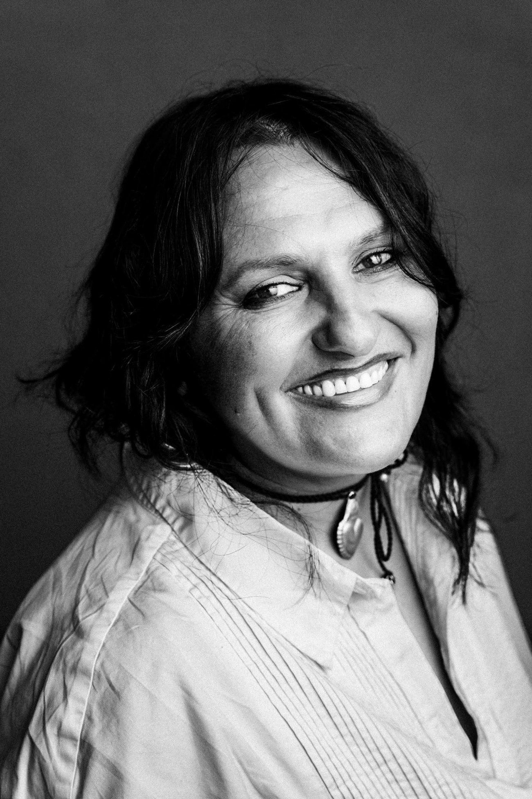

Siamo ciò che tratteniamo tra i denti
Farmacista, chimica e tecnologa farmaceutica · Esperta di microbiota orale
Membro MICS · Fondatrice del metodo Oral Gen
«Non c'è nulla che un chimico non possa fare: camminare sull'acqua è solo una questione di temperatura.»
